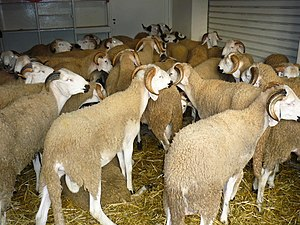

Qurban bayramı- İslam aləmində ən müqəddəs bayramlardan biridir. Bütün müsəlman aləmində hər il hicri təqvimi ilə zilhiccə ayının 10-cu günündən başlayır və adətən üç gün davam edir. Mərasimlərdə qoyun, qoç, inək, dana , keçi və ya dəvə kəsilir. Qurbandan (niyyətdən asılı olaraq) bir hissə pay göndərilir, digər hissələr isə ehtiyac sahiblərinə paylanır. Hamıya bərabər pay verilir, qurban kəsən özü də bərabər pay götürə bilər. Ənənəyə görə dilənçi və kasıblar bayram günü ac qalmasınlar deyə bu gün mərasimlərə dəvət olunurlar. Hicri təqvimdə Qurban bayramı Zilhiccə ayının onuncu gününə təsadüf edir və dörd gün davam edir. Beynəlxalq Qriqori təqvimində tarixlər ildən-ilə dəyişir və hər il təxminən 11 gün əvvəl dəyişir.
Qurban bayramı ən qədim bayramlardandır. Dini qurban kəsmə mərasimi İslamdan da əvvəl mövcud olub, lakin o vaxtlar günahdan təmizlənmək, qəzəblənmiş Allahın könlünü almaq və s. nəzərdə tutulurdu. Hicrinin (Məhəmməd Peyğəmbərin Məkkədən Mədinəyə köçməsinin) ikinci ilindən sonra dini qurban kəsmənin İslam aləmində başqa məqsədləri və səbəbləri yarandı. Belə ki, dini qurban kəsmə islam aləmində böyük ruh yüksəkliyi, dindarlıq, xeyriyyəçilik, başqalarına kömək etmək kimi əlamətlərə yiyələndi.[1] Dini qurban kəsmə İbrahim Peyğəmbərin həyatında baş verən əhvalatdan sonra yaranmışdır. Belə ki, Allah İbrahim peyğəmbərə oğlu İsmayılı qurban verməyi (onların Allaha imanını yoxlamaq üçün) əmr edir. İbrahim əsl dindar kimi Allahın əmrini yerinə yetirməyə hazır idi, İsmayıl özü də qurban olmağa razılaşır. Bu haqda Quranda yazılmışdır.
İsmayıl Qurbanında kəsilən heyvanlarda bir sıra şərtlər vacib sayılır. Qurbanlıq kimi seçilən heyvan qoç, iribuynuzlu dana, yaxud da dəvə olmalıdır. Nəsil artımında dişi heyvanların müstəsna rolu olduğuna görə qurbanlıq heyvanın erkək olması daha üstün tutulur. Qurbanlıq qoçun yaşına gəlincə, bu, ən azı altı aylıq heyvan olmalıdır. Lakin dana, yaxud dəvənin bir yaşı tamam olsa, daha yaxşıdır. Qurbanlıq dəvənin beş yaşı tamam olmalıdır. Qurban bayramında kəsilən heyvanın sağlam olması da vacib şərtdir. Əzalarında hər hansı nöqsanı olan, buynuzunun, yaxud qulağının biri olmayan, axtalanmış heyvanın qurban kəsilməsi İslamda məsləhət görülmür. Kəsiləcək qurbanlıq gözəgəlimli olmalıdır. Bu bayramın əsas mahiyyəti Allah yolunda kəsilmiş qurbanlıq heyvanın ətini Allahın imkansız bəndələri ilə bölüşmək, onları sevindirmək və ayinin də əsasında, orucluqda olduğu kimi, xeyirxahlıq, paklıq və Allaha inam və sevgi durur.
Bəzən bir neçə adam bir heyvan alıb onu öz aralarında bölüşməklə, yaxud gedib bazardan ət alıb gətirməklə öz qurbanını kəsmiş hesab edirlər. Lakin İslam dininə görə bunlar qurbanlıq hesab olunmur. Əlbəttə, bir neçə nəfər yığışıb bir dananı qurban kəsə bilərlər, bu şərtlə ki, hər bir şəxsə düşmüş ət payını ən azı üç hissəyə bölmək mümkün olsun. Bu hissələrdən biri onların öz ailəsinə sərf olunmalı, qalan hissələr isə fəqir-füqəraya paylanmalıdır. Qurbanlığın ən gözəl xüsusiyyətlərindən biri odur ki, burada din, məzhəb ayrı-seçkiliyinə yol verilmir. Bu bayramda istənilən dindən olan yetimin, kimsəsizin və yoxsulun haqqı var ki, varlının imkanlarından bəhrələnsin, adi günlərdə yeyə bilmədiyi qurbanlıq ətindən dadsın. Qurbanlıq o deməkdir ki, insanlar Allahın xoşuna gələcək bir əməli icra edirlər. Qurbanlığın şərtlərindən biri də budur ki, qurban kəsmək yalnız buna imkanı olan varlı adamların boynunda haqdır. İmkanı olmayan adama isə qurban kəsmək vacib deyil. Qurban kəsmək üçün borc pula heyvan almaq İslamda təqdir olunmur, çünki bu bayramın əsas mahiyyəti zənginlərlə imkansızların birliyi, qardaşlığıdır. Bu bayramda hamı sevinməlidir: varlılar-Allaha xoş gedən əməli icra etdikləri və kasıbları sevindirdiklərinə görə, kasıblar isə-dünya nemətindən əldə etdiklərinə və başqalarından gördükləri mərhəmətə və qayğıya görə.
İslam dünyasının ən müqəddəs bayramlarından sayılan Qurban bayramı bütün müsəlman ölkələrində təmtəraqla qeyd olunur. Azərbaycan müstəqillik əldə etdikdən sonra Milli Məclisin qəbul etdiyi 1992-ci il 27 oktyabr tarixli "Azərbaycan Respublikasının bayramları haqqında" Qanununa əsasən Qurban bayramı Azərbaycanda da dövlət səviyyəsində bayram edilir.